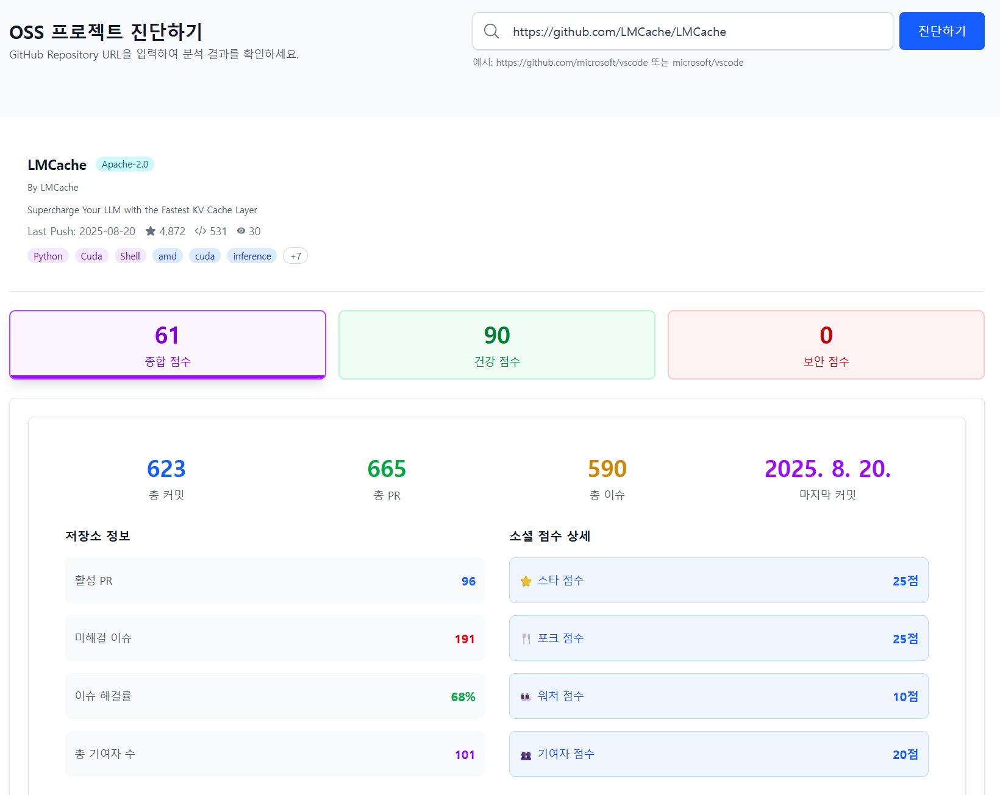
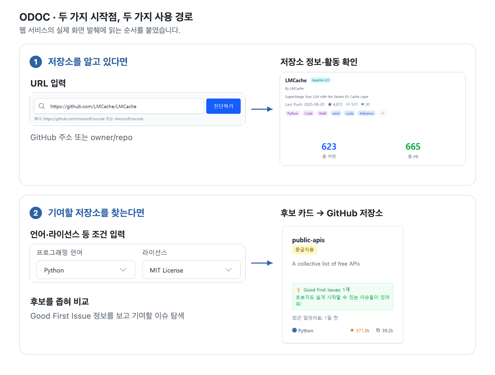
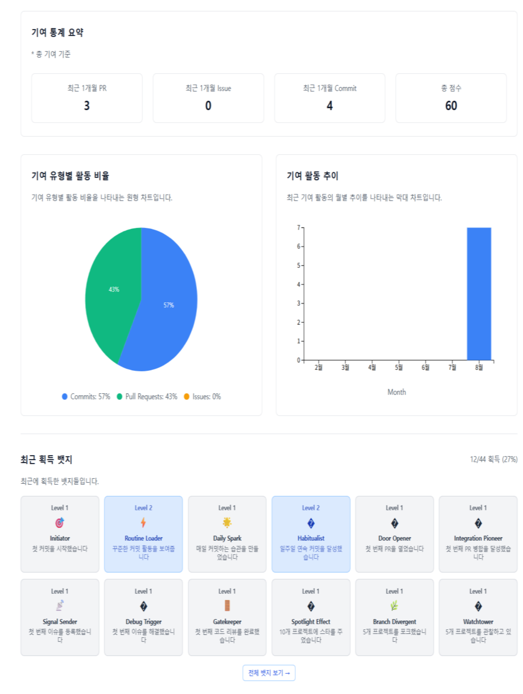
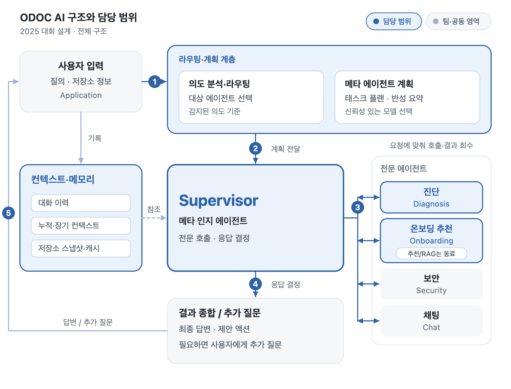
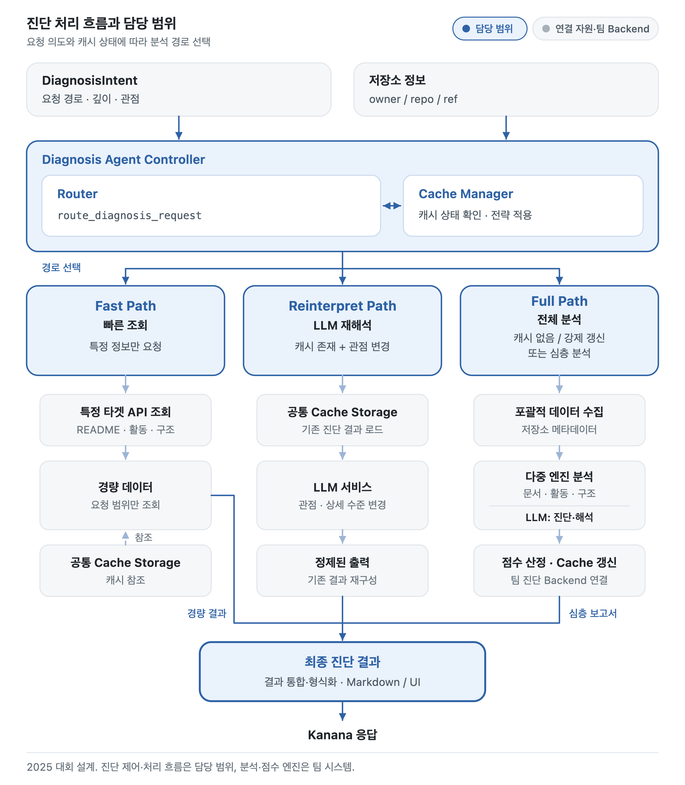

웹 서비스에서 AI 에이전트로
ODOC
오픈소스 저장소를 진단하고,
기여할 프로젝트를 찾도록 돕는 서비스
맡은 일
팀 리더로 기획·개발을 총괄하고 전체 기능과 구현 흐름을 정리했습니다.
진단 API·응답 통합·화면 연동, 개인 기여 대시보드, 활동성 지표를 맡았습니다.
전체 에이전트 구조와 호출 흐름, Supervisor·진단·온보딩 기능을 설계·구현했습니다.
동료와 나눈 범위 · 보안·추천/RAG, GitHub 연동과 DB·점수 계산·저장 기초는 동료가 담당했습니다. 저는 이 기능들을 연결하고 점수 계산부 분리·일부 규칙 보완에도 참여했습니다.

01 · 2025 웹 개발
근거를 붙인 진단 기준과 화면 연결
사용 기술팀 전체 · 공개 README 기준
- 백엔드
- JavaSpring BootSpring Security·JWTMySQL
- 프론트엔드
- JavaScriptReactViteTailwind CSSD3.js
- 외부 API
- GitHub GraphQL·REST API
오픈소스를 활용하며 무엇부터 확인할지 막막했던 경험에서 출발했습니다. 웹 개발을 가르칠 때 오픈소스를 권해도 비전공 학생들은 쓰기 어려워했고, 학교에서 오픈소스 수업 조교를 할 때도 무엇을 고르고 어떻게 적용할지부터 막히는 학생을 많이 봤습니다.
오픈소스를 쉽게 쓰고 온보딩도 도울 도구가 있으면 좋겠다고 생각해, 팀원들과 저장소 진단·기여 후보 탐색을 돕는 웹 ODOC를 만들었습니다.
어려웠던 일은 점수의 기준을 제 주관으로 정하지 않는 것이었습니다.
평가 항목과 근거
논문과 국내외 오픈소스 재단의 기준을 찾아보고, 팀원·연구실 학부생의 의견을 받으며 담당 지표에 근거를 붙였습니다.
진단 결과를 화면까지 연결
URL 입력부터 진단 응답까지 이어지는 경로를 맡아, Spring Boot 진단 API와 수집 결과를 React 화면에 연결했습니다.
- 수집부 분리컨트롤러의 중첩 수집을
DiagnoseService로 나눴습니다. 수집 책임을 분리해 결합도를 낮추고, 유지보수와 재사용을 쉽게 하려는 목적이었습니다. - 병렬 집계·연동기여자·언어·커밋·최근 활동을 모아 화면에 연결하고, 동료의 보안 분석 응답도 연동했습니다.
- 오류 시 기본값기여자·언어·커밋 활동·최근 활동 조회에서 오류가 나면 기본값으로 대체하고, 점수 계산에서 예외가 나면 기본 점수를 넣도록 했습니다.
- Nodata 안내활동이 없다는 응답에는 화면에 별도 안내를 표시했습니다.

개인 기여 대시보드와 웹 구현 범위
개인의 기여 통계·활동 이력·레벨·배지를 보여 주는 대시보드를 React와 D3.js 차트로 구현했습니다. 저장소 진단과는 별도 경로입니다.

웹 점수 계산은 별도의 활동성 점수 V2 모델·AI 진단 점수와 구분됩니다.
웹 팀 역할표02 · 2025 AI 확장
질문에 맞춰 분석을 연결하는 AI 에이전트
사용 기술팀 전체
- AI·백엔드
- PythonFastAPILangGraphLangChainKanana(카카오 LLM)
- 프론트엔드
- ReactViteTailwind CSS
Supervisor·진단·온보딩은 LangGraph 그래프로 구성돼 있습니다.
검증 · 대회 발표 전에 전체 테스트를 실행해 확인했습니다. 테스트는 코딩 에이전트와 함께 진행했습니다.
웹 ODOC는 저장소의 점수·통계와 기여 후보를 제공했습니다. 오픈소스를 잘 모르는 사람도 “이런 기능의 오픈소스를 찾고 싶다”고 물으면 바로 후보를 제안받을 수 있어야 한다고 봤습니다.
그래서 사용자 의도에 맞는 도메인 기능을 선택·호출하고 결과를 종합하는 상위 에이전트 Supervisor를 설계·구현했습니다. 이 AI 확장을 졸업논문 연구로 준비하며 카카오 AI 에이전트 경진대회에도 참여했습니다.
팀원 모두 AI 개발 경험이 없어 관련 개념과 구현 방법을 함께 배웠습니다. 각 에이전트가 얼마나 자율적으로 동작할지를 두고 의견이 달랐습니다.
구조 결정 · 전체 조정과 도메인별 수행
- 보안 담당 동료모든 하위 에이전트의 자율성을 중요하게 보았습니다.
- 제 제안상위가 전체를 조정하고, 하위가 각 도메인에 특화된 역할을 수행하는 구조를 제안했습니다.
- 논의 결과보안·추천/RAG는 동료가 맡고, 저는 전체 에이전트 구조와 호출 흐름을 정리해 각 도메인 기능을 연결했습니다. 동료의 자율적인 보안 에이전트 구현도 참고했습니다. 온보딩은 동료의 추천 기능과 함께 엮었습니다.

요청과 캐시 상태에 따른 진단 세 경로
저장소 정보를 분석해 문서 품질·활동성·온보딩 점수를 제공하는 진단 기능을 설계·구현했습니다. 요청 의도와 캐시 상태에 따라 필요한 처리를 나눴습니다.
- Fast Path특정 정보만 요청하면 README·활동·구조 등 필요한 항목을 조회합니다.
- Reinterpret Path캐시가 있고 관점을 바꾸는 요청이면 기존 진단 결과를 불러와 LLM으로 재해석합니다.
- Full Path캐시가 없거나 강제 갱신·심층 분석을 요청하면 전체 자료 수집과 분석으로 연결합니다.

라우팅·메모리와 진단 상세 설계
03 · 2026 후속 연구
저장소 요약과 첫 기여 후보를 다루는 후속 연구
아래는 연구용 paper-demo이며, 공개 웹 운영 화면과 구분합니다. 점수·통계·추천은 데모 예시값입니다.